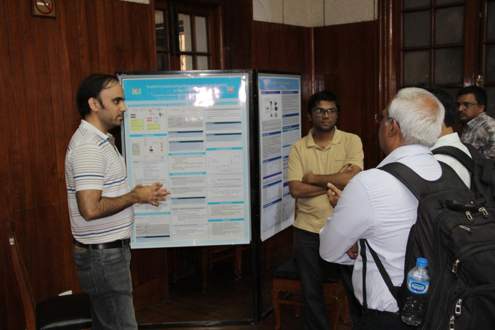
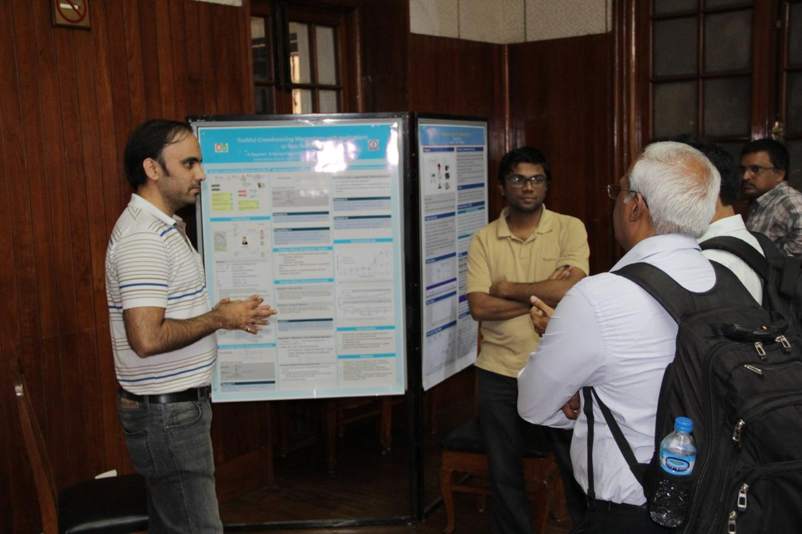

Welcome to the Seventh Joint Research Students Symposium of the Departments of CDS, CSA, ECE, EE, and ESE at the Indian Institute of Science!
EECS-2016 primarily is a forum for presentations by senior doctoral students (expecting to graduate in 2016) involving the Departments of Computational and Data Sciences (CDS), Computer Science and Automation (CSA), Electrical Communication Engineering (ECE), Electrical Engineering (EE), and Electronic Systems Engineering (ESE).
|
Tweets by @eecs_iisc |
|
Shihab Shamma
K. Vaidyanathan Distinguished Chair, IISc. Institute of Systems Research, University of Maryland, College Park, USA. |

|
Pramod Varma
Chief Architect and Technology Advisor, Unique Identification Authority of India (UIDAI). "Building Identity Platform: Aadhaar Experience" More information |
|
Vivek Raghavan
Chief Product Manager & Biometric Architect, Unique Identification Authority of India (UIDAI). "India Stack: Towards Presence-less, paperless, and cashless Service Delivery" More information |
|
Surojit Chatterjee
Senior Vice President, Flipkart. More information |
|
Parameshwar P. Iyer
Department of Management Studies, IISc. "Role of IPTel at IISc" |
|
Yogesh Simmhan
Department of Computational and Data Sciences, IISc. "Exploring Distributed Platforms for Fast Data Analytics" More information |
|
Arpita Patra
Department of Computer Science and Automation, IISc. "Secure Multiparty Computation" More information |
|
Himanshu Tyagi
Department of Electrical Communication Engineering, IISc. "Strong Converse for a Degraded Wiretap Channel via Active Hypothesis Testing" More information |
|
Kaushik Basu
Department of Electrical Engineering, IISc. "Medium Voltage Grid Integration of Utility Scale Solar" More information |
|
Mayank Shrivastava
Department of Electronic Systems Engineering, IISc. "The Future of Electronics from Semiconductor's Perspective" More information |


 


| Copyright: EECS Research Students Symposium, IISc |
|
IISc Home |